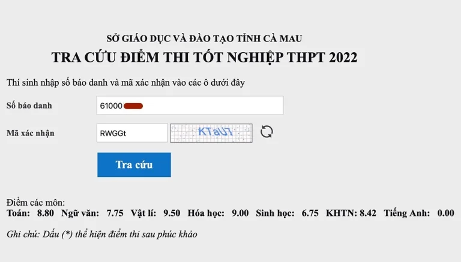

Nam sinh ngủ quên trong phòng thi tốt nghiệp được vào ĐH FPT Cần Thơ
Thứ Ba, ngày 04 tháng 10 năm 2022
Nam sinh trượt tốt nghiệp THPT 2022 do ngủ quên trong giờ thi Tiếng Anh được trường Đại học FPT Cần Thơ nhận theo diện sinh viên dự bị.
Nam sinh từng học trường THPT chuyên Phan Ngọc Hiển (Cà Mau) đã hoàn thành thủ tục nhập học ngành Công nghệ phần mềm, ông Lê Trường Tùng, Chủ tịch Hệ thống giáo dục FPT, cho biết sáng nay. Do chưa tốt nghiệp THPT, em được nhận theo diện sinh viên dự bị, nhưng vẫn được học cùng các tân sinh viên khác.
Tháng 5/2023, nam sinh sẽ tạm ngưng học để tham dự kỳ thi tốt nghiệp THPT. Nếu đủ điều kiện tốt nghiệp,
em được trường đại học chuyển đổi các tín chỉ đã học trong một năm dự bị để học năm thứ hai như bình
thường.
Ông Tùng đánh giá với lực học của nam sinh này, việc vượt qua kỳ thi tốt nghiệp THPT không khó. Trong
thời gian chờ nhập học, em đã thi IELTS và đạt 5.5 – đủ điều kiện miễn thi tiếng Anh tốt nghiệp THPT nên
chỉ cần hoàn thành các môn còn lại.

Kết quả các môn thi tốt nghiệp THPT năm 2022 của nam sinh Cà Mau. Ảnh: An Minh
Ông Tùng cho rằng do nam sinh là học sinh trường chuyên, điểm thi khối A00 (Toán, Lý, Hóa) đạt 27,3 nên
có thể khẳng định “không dốt”, thậm chí là học sinh khá giỏi. “Một học sinh có năng lực phải ở nhà một
năm vì sơ suất, tôi cho rằng rất đáng tiếc nên cố gắng tìm cách giải quyết tốt nhất, linh động dựa trên
nguyện vọng của người học”, ông Tùng cho hay. Đầu tháng 10, nam sinh bắt đầu tuần học đầu tiên tại
trường.
Trong kỳ thi tốt nghiệp THPT 2022, nam sinh đạt Toán 8,8, Ngữ văn 7,75, Vật lí 9,5, Hóa học 9, Sinh học
6,75, và tiếng Anh 0 do ngủ quên trong giờ thi. Do bị điểm liệt (từ 1 trở xuống), em không đủ điều kiện
tốt nghiệp THPT 2022.
Sở Giáo dục và Đào tạo tỉnh Cà Mau xác định giám thị coi thi làm đúng quy chế khi nhắc thời gian làm bài
còn 15 và 5 phút cho toàn bộ thí sinh trong phòng, không nhắc riêng hay gọi nam sinh dậy. Dù vậy, nhiều
nhà giáo cho rằng các giám thị đúng quy chế nhưng chưa linh hoạt.
Sau khi báo cáo sự việc với Bộ Giáo dục và Đào tạo, lãnh đạo Sở cũng nhìn nhận cán bộ coi thi chưa bao
quát tốt phòng thi nên chậm phát hiện thí sinh ngủ quên, yêu cầu tránh lặp lại sự việc tương tự.